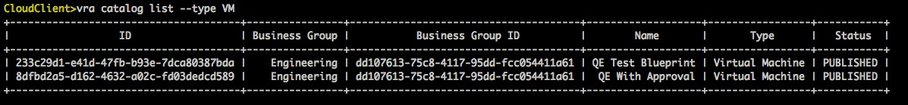
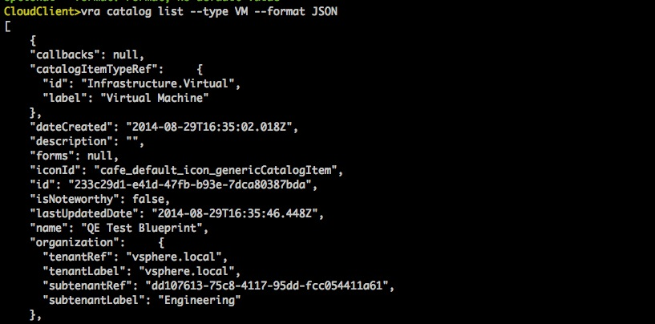

CloudClient has some common parameters for all commands
- --format parameter exports all results to a table format by default, a comma seperated file (CSV) or JSON data
- --export parameter can write all responses to a file
- --type parameter can show only specified type of items in the result of certain commands. For example the command "vra catalog list --type VM" will show only VMs in the catalog listing; while command "vra vatalog list --type UNASSIGNED" will only show unassigned catalog items.
Table Format
CSV Format

JSON Format
